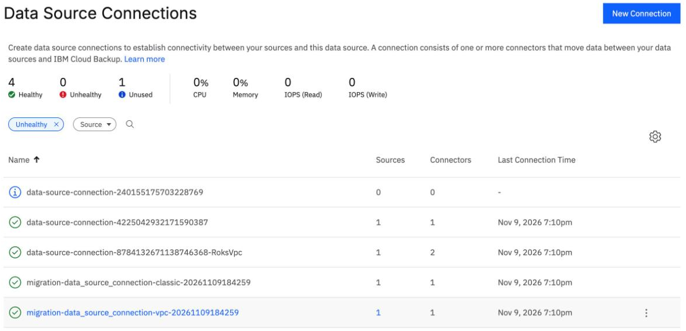
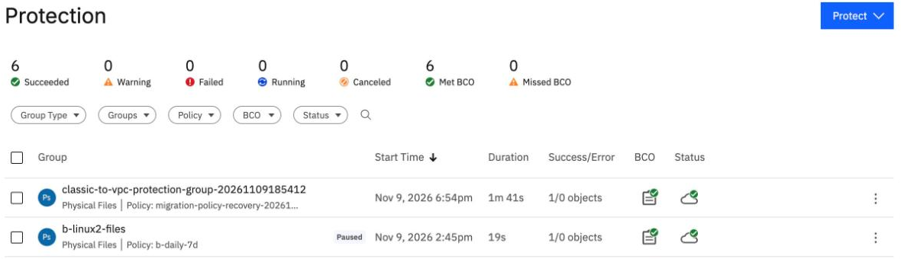
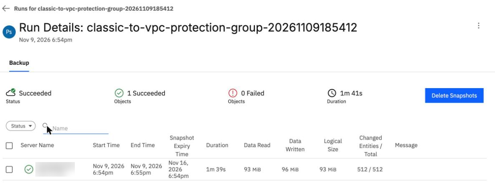
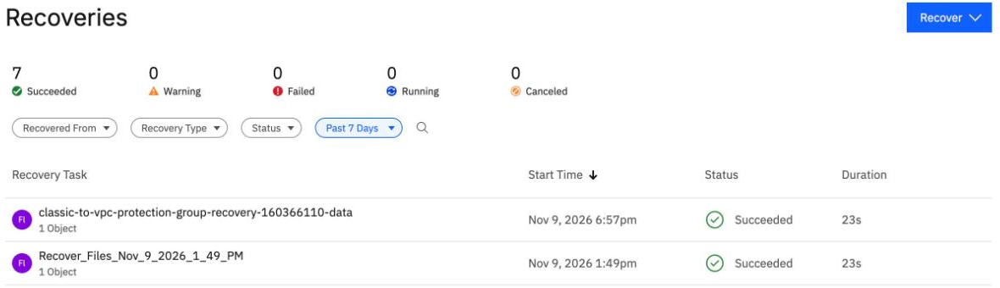

Move Classic backups to VPC with the migration tool
By the end you can say what IBM's Classic-to-VPC migration tool does and does not do, read the failures that stopped its first applies, predict a clean re-run and a second run, and find its results in the BRS console.
Northgate Freight is a made-up company. It has files on a Classic server, ng-classic-01, and wants them on a VPC server, ng-vpc-01. IBM publishes a tool for exactly that.
Every number and screen in this unit comes from real runs in our lab. Server names, addresses and IDs were changed to made-up ones, and server names are blurred in the screenshots.
What the tool is
The tool is a Terraform toolkit that moves files and folders from a Classic server to a VPC server. It does not clone the operating system. It uses BRS itself: it installs the BRS agent on the source and on the target, runs one on-demand file backup of the source, and restores it onto volumes already attached to the target.
How many backups does the tool make of the source?
Show the answer
IBM's documents describe one on-demand file backup and one restore per volume. The tool does no final sync, no delta step and no rollback.
Does the tool check that the copy is right?
Show the answer
There is no checksum and no compare in the tool. In our lab we compared every file ourselves with SHA-256. All 507 files matched, and the modes, owners and a hard-linked pair matched too.
Why the first applies failed
Our lab needed six applies and five fixes that IBM's documents do not mention. IBM's documents say only port 50051 needs to be opened. We needed more. Read what each failed apply said, and pick the cause.
Apply 1. The policy, connections, connector servers and agents were made. Then: Create Endpoint Gateway failed An endpoint gateway already exists for this service, HTTP 409. What does it mean?
Show the answer
The fix was to set brs_vpe_name to the name of the endpoint the VPC already had.
Apply 2. After 17 minutes: Process exited with status 1, at the VPC connector registration. The tool hides the output because it holds a secret. How was the cause found?
Show the answer
The fix was rules for TCP 443 on the connector's own security group, from the Classic subnet and from the VPC subnet.
Apply 3. After 22 minutes the log said WARNING: VPC connector health check timeout. Continuing... Did the apply continue?
Show the answer
The health check made 30 tries of isConnected and never got true. The cause: the BRS private endpoint's own security group allowed 443 only from the lab group. The connection also needs TCP 29991. Rules for both from the connector group fixed it.
Apply 5. Both connector health checks passed and the source registered. Then: Failed to connect to ... cannot be reached due to transport error, at the target. Which port was closed?
Show the answer
Rules for TCP 50051 from the connector group fixed it. The sixth apply passed: Apply complete! Resources: 10 added, 0 changed, 0 destroyed. In the first run the backup took 11 min 50 s.
The clean run, a second run, and what is left
After the first run, we wrote "the clean path": a list of rules to add before the first apply. We ran the tool again on a rebuilt lab, with those rules in place.
How many applies did the second run need?
Show the answer
One apply, no failure.Plan 29 to add, 0 to change, 0 to destroy Apply started 18:42:58 Backup 18:54:20 to 18:55:59 (1 min 39 s) Restore 32 s Apply complete 18:57:51, 29 added, about 15 minutes
The backup read 97,484,800 bytes in 1 min 39 s, against 11 min 50 s in the first run. Check of the data: 507 files, 0 SHA-256 differences.
A file changes on the Classic server after the copy. Northgate runs the tool again with the same variables. What does Terraform plan?
Show the answer
The plan was "1 to add", a local file that holds the API key. The tool treats the first copy as final. When we forced the steps to run again, the restore used the first snapshot: six files differed, three new files were missing, and two deleted files were still on the target. The advice for a real move: run the tool once, at the moment of the switch.
Northgate runs terraform destroy on the Tool server after the migration. What does it leave behind?
Show the answer
It destroyed 28 resources with no error. It did not delete the group's snapshot. The group stayed in BRS, renamed _DELETED_classic-to-vpc-protection-group-<time>, with its snapshot until it expired a week after the backup. It left the agents on both servers. The Tool server and source server, the target and its volume, the Classic security group and key, and the added rules were deleted by hand.
What the tool left in the BRS console
The tool has no console of its own. These screens come from the BRS console in our lab. Click where you would click. After two misses the right place is marked.

Data Source Connections: 4 Healthy, 0 Unhealthy, 1 Unused. Two rows begin migration-data_source_connection-classic and migration-data_source_connection-vpc, each with 1 source and 1 connector." width="1180" height="570">The tool made two data source connections. Which rows are they?
Show where
Right. The two rows named migration-data_source_connection-classic-... and ...-vpc-.... Each has 1 source and 1 connector, and each is healthy.

One of these groups keeps backing up its server every day. Which one?
Show where
Right. The tool's group has no Paused tag, and its policy keeps backups one week. It keeps backing up the Classic server daily after the migration, until you pause or delete it.

You opened the tool's backup run. Where does it show when the snapshot will expire?
Show where
Right. Snapshot Expiry Time is one week after the backup. The run read 93 MiB, with 512 of 512 entities (files and folders) in Changed Entities / Total.

Which entry is the tool's restore?
Show where
Right. It is named after the group: classic-to-vpc-protection-group-recovery-...-data. It is a normal BRS recovery, Succeeded, 23 s here.

The Health page shows a problem the migration did not hit. Click the alerts.
Show where
Right. Two critical DataSourceConnectorUpgradeFailed alerts, one for each connector. The tool's connectors run release 7.2.18 and BRS cannot upgrade them: "Not enough free disk space ... Required: 4518 MB, Available: 3990 MB". The backup and restore worked on 7.2.18 all the same.
Three questions
Northgate needs to move a Classic server's files to a VPC server. What does the tool do?
Show the answer
It moves files and folders only, with one backup and one restore. A second run does not copy changes.
The tool's run finished and Terraform says Apply complete! How does Northgate know every file arrived?
Show the answer
The tool never compares the copy with the source. In our lab, 507 files and 0 differences by SHA-256.
Review from unit 6.2. BRS tries to upgrade the tool's connectors and fails. Did that stop the backup and restore?
Show the answer
The alert said there was not enough free disk space for the upgrade. The migration worked.
You know what the tool does and what it leaves
The tool makes one backup and one restore of files and folders. It never checks the copy, a second run copies nothing, and terraform destroy leaves the snapshot and the agents. With the network rules added first, one apply took about 15 minutes in our lab.